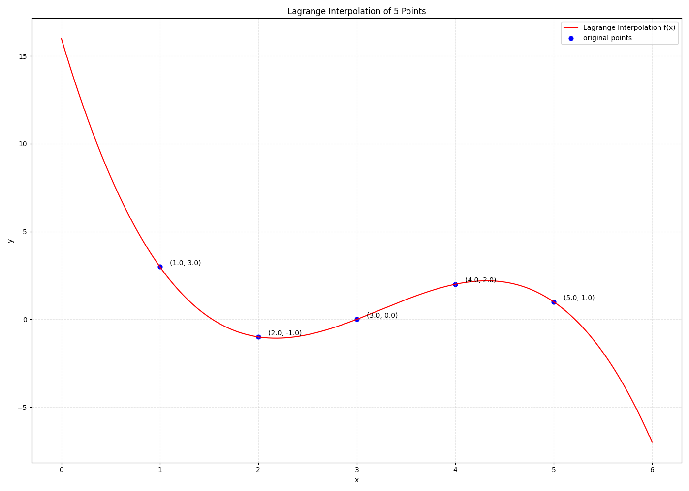

라그랑주 보간법 정리
라그랑주 보간법에 대해서 수식을 정리해본다.
개념은 단순히 \(n\) 개의 점 \((x_i, y_i)_{i\in [n]}\) 에 대하여
\(f(x_i) = y_i\) 를 만족하는 \(f\) 를 구하는 것이다.
1. Lagrange basis polynomial
\(n\) 개의 점 \(\lbrace(x_i, y_i)\rbrace_{i\in[n]}\) 에 대하여, Lagrange basis polynomial \(L_i(x)\) 를 아래와 같이 정의한다.
\[ L_i(x) = \prod_{j\neq i \;\wedge\; j = 1}^n \frac{x-x_j}{x_i-x_j} \]
\(i, j \in \mathbb{F} \) 에 대하여 \(L_i(x_j)\) 는 다음의 값을 갖는다.
\[ L_i(x_j) = \begin{cases} 0 \; \text{ if } j \neq i \\ 1 \; \text{ if } j = i \end{cases} \]
즉, \(i\) 번째 위치에서만 \(1\)이고 다른 점들에서는 \(0\)이 되도록 하는 다항식으로써 일종의 선택자 (selector) 역할을 한다고 볼 수 있다.
\(L(x)\) 가 “기저” 다항식으로 불리는 이유는, \(\lbrace L_i \rbrace_{i\in[n]}\) 가 (i) 모두 선형독립이며, (ii) \(\text{degree } < n\) 인 모든 다항식을 생성할 수 있기 때문이다.
이러한 기저 다항식을 이용해 \(f(x)\) 를 다음과 같이 완성할 수 있다.
\[ f(x) = \sum_{i=1}^n y_i \cdot L_i(x) \]
2. Example
예를 들어, 아래와 같이 다섯 개의 점이 있다고 해보자.
\[ (1, 3),\; (2, -1),\; (3, 0),\; (4, 2),\; (5, 1) \]
첫 번째로 할 일은 basis polynomial \(L_1, L_2, L_3, L_4, L_5\) 를 구하는 것이다.
\[ \begin{aligned} L_1(x) &= \frac{(x-2)(x-3)(x-4)(x-5)}{(1-2)(1-3)(1-4)(1-5)} = \frac{x^4-14x^3+71x^2-154x+120}{24} \\[6pt] L_2(x) &= \frac{(x-1)(x-3)(x-4)(x-5)}{(2-1)(2-3)(2-4)(2-5)} = \frac{x^4-13x^3+59x^2-107x+60}{-6} \\[6pt] L_3(x) &= \frac{(x-1)(x-2)(x-4)(x-5)}{(3-1)(3-2)(3-4)(3-5)} = \frac{x^4-12x^3+49x^2-78x+40}{4} \\[6pt] L_4(x) &= \frac{(x-1)(x-2)(x-3)(x-5)}{(4-1)(4-2)(4-3)(4-5)} = \frac{x^4-11x^3+41x^2-61x+30}{-6} \\[6pt] L_5(x) &= \frac{(x-1)(x-2)(x-3)(x-4)}{(5-1)(5-2)(5-3)(5-4)} = \frac{x^4-10x^3+35x^2-50x+24}{24} \end{aligned} \]
다음으로는 \(f(x)\) 를 완성한다.
\[ \begin{aligned} f(x) &= \sum_{i=1}^n y_i \cdot L_i(x) \\ &= y_1L_1(x) + y_2L_2(x) + y_3L_3(x) + y_4L_4(x) + y_5L_5(x) \\ &\cdots \\ &= -\frac{2}{3}x^3 + \frac{13}{2}x^2 - \frac{113}{6}x + 16 \end{aligned} \]
예를 들어, \(f(x_2 = 2) = y_1 \cdot 0 + y_2 \cdot 1 + y_3 \cdot 0 + y_4 \cdot 0 + y_5 \cdot 0 = y_2\) 임을 쉽게 알 수 있다.
2-1. example code
import numpy as np
import matplotlib.pyplot as plt
from numpy._typing import NDArray
# 점 5개
xs = np.array([1, 2, 3, 4, 5], dtype=float)
ys = np.array([3, -1, 0, 2, 1], dtype=float)
# Lagrange basis polynomial
def L(i, x):
xi = xs[i]
Li: float = 1.0
for j in range(len(xs)):
if j != i:
Li *= (x - xs[j]) / (xi - xs[j])
return Li
# Interpolation polynomial f(x)
def f(x):
return sum(ys[i] * L(i, x) for i in range(len(xs)))
# Plot 범위
plot_x = np.linspace(min(xs)-1, max(xs)+1, 400)
plot_y = [f(x) for x in plot_x]
# Plot
plt.figure(figsize=(14, 10))
# Interpolation curve
plt.plot(plot_x, plot_y, label="Lagrange Interpolation f(x)", color='red')
# Original points
plt.scatter(xs, ys, color='blue', s=40, label='original points')
# 각 점에 라벨
for xi, yi in zip(xs, ys):
plt.text(xi + 0.1, yi + 0.1, f"({xi}, {yi})")
plt.title("Lagrange Interpolation of 5 Points")
plt.xlabel("x")
plt.ylabel("y")
plt.grid(True, linestyle='--', alpha=0.3)
plt.legend()
plt.tight_layout()
plt.show()
